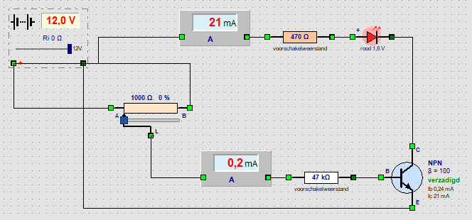

Objectif : régler le courant de base avec un potentiomètre et voir que le courant de
collecteur est toujours β fois plus grand, jusqu’à ce que le transistor soit saturé.
Le curseur du potentiomètre commande la base à travers 47 kΩ. Le circuit de
collecteur contient une résistance de 470 Ω et une LED rouge. À 50 % : Ib = 0,11 mA et
Ic = 11 mA.
Régler le courant de base
Lancez la simulation. Le potentiomètre est à 50 % : le curseur donne 6 V. Pointez le transistor : le
courant de base vaut Ib = (6 − 0,7) V / 47 kΩ ≈ 0,11 mA et le courant de collecteur
11 mA. La LED brille à moitié.
Le transistor amplifie (orange). Vérifiez : 11 mA / 0,11 mA = 100. C’est le gain en courant
β (bêta) : Ic = β × Ib.
Faites glisser le curseur vers la droite, à 75 %. Le courant de base descend à 0,05 mA et le courant de collecteur à
4,9 mA : encore 100 fois plus. La LED faiblit.
Faites glisser le curseur vers la gauche, à 25 % : 0,18 mA dans la base, 18 mA dans le collecteur. La LED
brille plus fort.
Un petit changement du courant de base donne un changement 100 fois plus grand du courant de collecteur. C’est
amplifier.
Le milliampèremètre de la base n’affiche qu’une décimale (0,1 mA). Le transistor lui-même affiche Ib
plus précisément, à droite du symbole.
Les limites : bloqué et saturé

À 0 % : le transistor est saturé. Le courant de collecteur reste à 21 mA, alors que β ×
Ib = 24 mA.
Faites glisser le curseur tout à gauche (0 %). Le courant de base vaut 0,24 mA, mais le courant de collecteur
s’arrête à 21 mA au lieu de 24 mA. Le transistor est saturé (vert) : la LED et la résistance de
470 Ω ne laissent pas passer plus, (12 − 2,1 − 0,2) V / 470 Ω ≈ 21 mA.
Faites glisser le curseur tout à droite. Au-dessus d’environ 94 %, le curseur donne moins de 0,7 V : plus
aucun courant de base, le transistor est bloqué (gris) et la LED s’éteint.
Entre bloqué et saturé se trouve la zone où le transistor amplifie. Dans la leçon 38, nous
n’utilisions que les deux extrêmes : le transistor fonctionne alors en interrupteur.
Exercice : un autre transistor
Mettez le potentiomètre à 50 % et faites un clic droit sur le transistor : Gain › β = 50. Que devient
le courant de collecteur ? Et avec β = 200 ?
Solution
Avec β = 50 : Ic = 50 × 0,11 mA ≈ 5,6 mA ; la LED faiblit. Avec β = 200, ce
serait 22 mA, mais le circuit ne laisse passer que 21 mA : le transistor est déjà saturé. Les vrais transistors
d’un même type diffèrent beaucoup en β. C’est pourquoi on conçoit un interrupteur avec un courant de base
largement suffisant.
En vrai : dans un amplificateur de musique, un transistor transforme le faible signal
d’un micro ou d’un téléphone en un signal fort capable d’alimenter un haut-parleur.